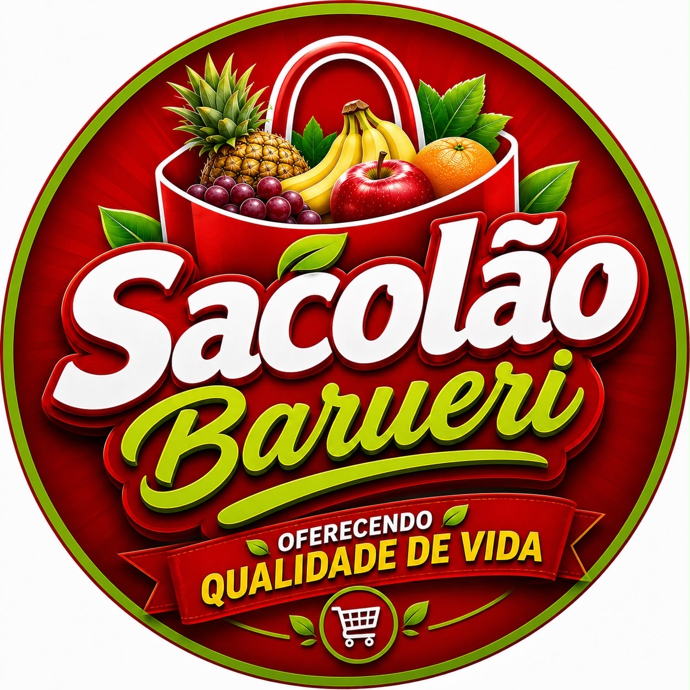
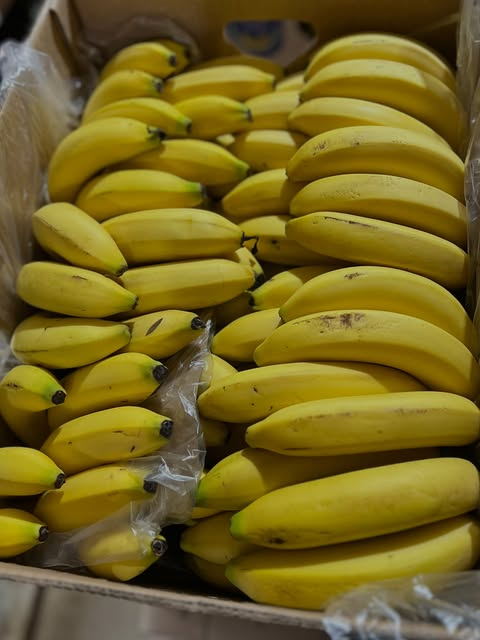
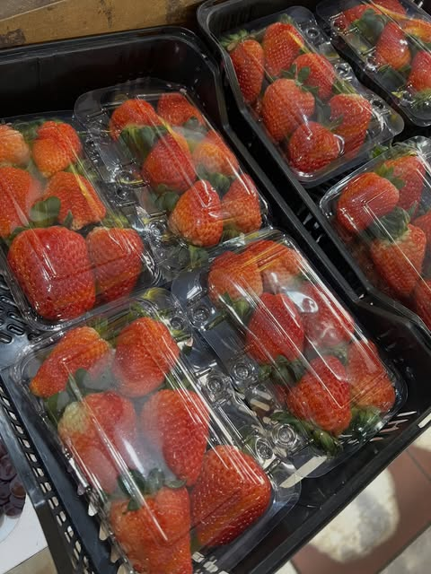

FRUTAS
Banana
Para o lanche, a vitamina e o bolo.
Foto do Instagram da loja
SacolãoBarueri.HORTIFRUTI EM BARUERI
Da sua lista de compras à receita de família. Frutas, legumes e verduras para deixar o dia a dia mais gostoso.
Seu próximo prato começa por aqui.

CORES QUE DÃO VONTADE.ESCOLHA O SEU FAVORITO
Do café da manhã ao jantar,
tem sempre uma boa combinação.
Deslize e descubra cada alimento.
Para o lanche, a vitamina e o bolo.
Foto do Instagram da loja LEGUMES
LEGUMESCor e sabor para a sua salada.
Imagem ilustrativa
FRUTASUm toque especial na sobremesa.
Foto do Instagram da loja VERDURAS
VERDURASMais verde nas suas refeições.
Imagem ilustrativa4 sugestões de produtos • seleção ilustrativa, consulte a disponibilidade na loja.
UM ALIMENTO, MUITAS DESCOBERTAS
Escolha uma cor.
Descubra o alimento por dentro.
CONHEÇA O ALIMENTO
Vai bem no café da manhã, na vitamina e no bolo.
DA FEIRA PARA A COZINHA
Ideias simples para transformar
suas compras em bons momentos.
Toque para ver ingredientes e preparo.
Fotos dos ingredientes; não representam o prato pronto. Banana, morango, uva e mexerica: Instagram da loja. Demais imagens: ilustrativas.
PEQUENAS IDEIAS, NOVAS POSSIBILIDADES
Salve os produtos para sua próxima visita.
Escolha uma ideia da cozinha e adicione os produtos do hortifruti à lista.
Explorar receitas ↗Ajuste a porção e veja energia, fibras, proteínas e carboidratos.
DIRETO DO NOSSO INSTAGRAM
Fotos publicadas pela loja.
Um pedacinho da nossa vitrine.
Explore e abra a publicação original.
DE OLHO NAS NOVIDADES
Este espaço vai reunir as ofertas do sacolão.
Enquanto isso, acompanhe as novidades pelo Instagram.
PRAZER, BARUERISACOLAO
Uma fruta no meio da tarde. Uma salada no almoço. A receita que reúne todo mundo em volta da mesa.
Na Rua Olga, no Parque dos Camargos, você encontra o Sacolão Barueri. Explore os produtos, inspire-se para sua próxima receita e acompanhe as novidades pelo Instagram.
Da nossa vitrine
para a sua próxima receita.
VAMOS NOS ENCONTRAR?
Barueri, São Paulo
Rua Olga, 290 · Parque dos Camargos
Endereço da loja a confirmar
Horários de atendimento a confirmar
O botão de rota ficará disponível quando o endereço exato for cadastrado.
Como chegarA CONVERSA COMEÇA AQUI
Uma dúvida sobre produtos ou sobre a loja?
Escolha como prefere conversar.